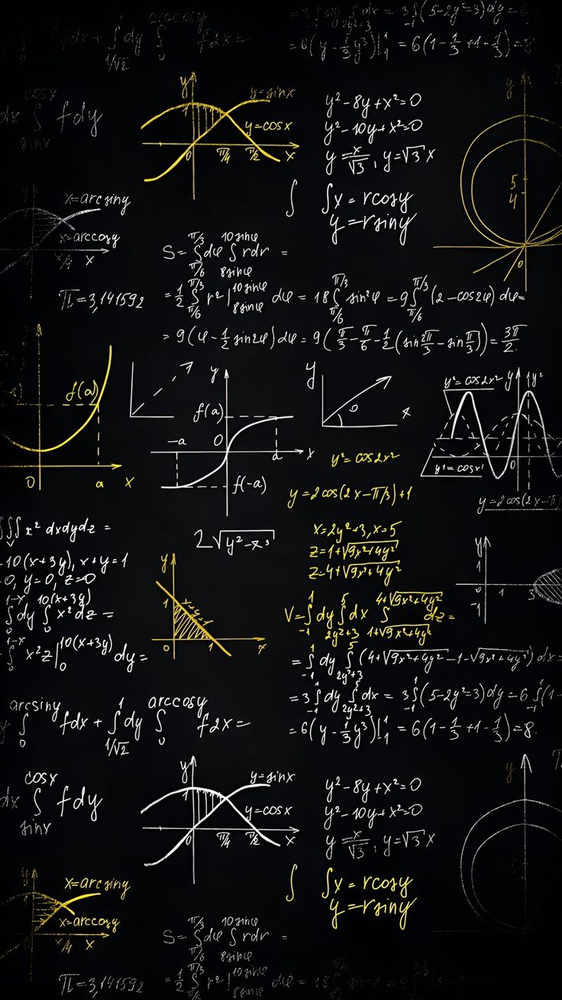

CONTOH SOAL DAN PEMBAHASAN FUNGSI KUADRAT
Udah tau belum kalau fungsi kuadrat itu ada berbagai jenis, cari tahu yuk
Jenis Jenis fungsi kuadrat
Fungsi kuadrat Sederhana
- Bentuk:
- f(x)=ax2
- Tidak ada koefisien b dan c.
- Contoh:
- f(x)=2x2
Fungsi Kuadrat Lengkap
- Bentuk:
- f(x)=ax2+bx+c
- Mengandung semua komponen kuadrat, linear, dan konstanta.
- Contoh:
- f(x)=3x2−2x+1
Fungsi kuadrat Tanpa Konstanta
- Bentuk:
- f(x)=ax2+bx
- Tidak ada komponen konstanta ccc.
- Contoh:
- f(x)=4x2−5x
Ciri Ciri Fungsi Kuadrat
Berbentuk Parabola
- Jika a > 0, parabola terbuka ke atas (cekung ke bawah).
- Jika a < 0, parabola terbuka ke bawah (cekung ke atas).
Titik Puncak(Vertex)
- Titik puncak diperoleh dari koordinat:
- x = -b/2a, y = f(-b/2a)
Sumbu Simetri
- Garis yang membagi parabola menjadi dua bagian yang sama.
- Sumbu simetri: x = -b/2a
Titik Potong Sumbu Y
Titik potong dengan sumbu y diperoleh dengan cara mengganti x = 0 pada fungsi:
f(0) = c
Jadi, titik potong dengan sumbu y adalah( 0, c)
Titik Potong Sumbu X
Titik potong dengan sumbu x diperoleh dengan menyelesaikan persamaan kuadrat:
ax2 + bx + c = 0
Gunakan rumus kuadrat untuk mencari akar akarnya :
x = (-b ± √(b2 - 4ac)) / 2
Nilai b2 – 4ac disebut diskriminan(Δ)
Diskriminan (Δ\DeltaΔ)
- Nilai diskriminan menentukan jenis akar persamaan kuadrat: Δ=b2−4ac
- Jika Δ > 0: Dua akar realdan berbeda(dua titik potong).
- Jika Δ = 0: Dua akar real yang sama(satu titik potong(titik puncak)).
- Jika Δ < 0: Tidak memiliki akar real (akar imajiner).
Contoh Soal & Pembahasan 1
- Menentukan Grafik Fungsi Kuadrat
- Diberikan fungsi f(x)=2x2−4x+1
- Apakah parabola terbuka ke atas atau ke bawah?
- Tentukan sumbu simetri.
- Tentukan titik puncak.
- jawaban :
- a. Karena a = 2(positif), Parabola terbuka ke atas
- b. Sumbu simetri :
- c. Titik puncak :
Contoh Soal & Pembahasan 2
- Tentukan akar-akar dari persamaan x2 – 6x + 8 = 0
- Jawaban :
- x2 – 6x + 8 = 0
- Faktorkan :
- (x - 4)(x - 2) = 0
- Jadi, Akar-akarnya adalah x = 4 dan x = 2
Contoh Soal & Pembahasan 3
- Menentukan Grafik Fungsi Kuadrat f(x)= x2 − 4x + 3
- Arah parabola : a = 1 > 0, Jadi parabola terbuka ke atas
- Sumbu Simetri :
-
Titik Potong dengan sumbu y :f(0)=3, Jadi titik Potong dengan sumbu y adalah (0,3)